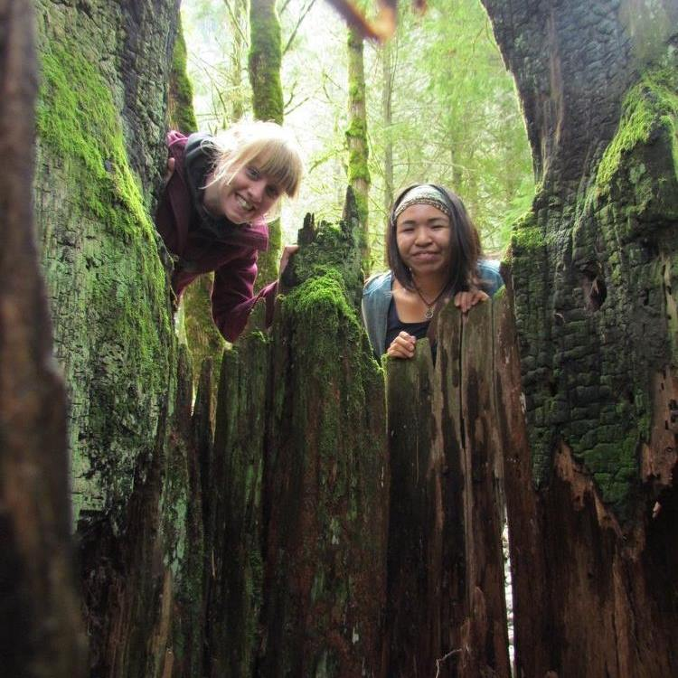
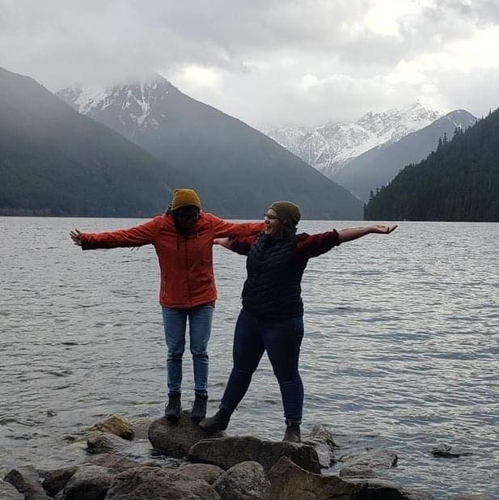
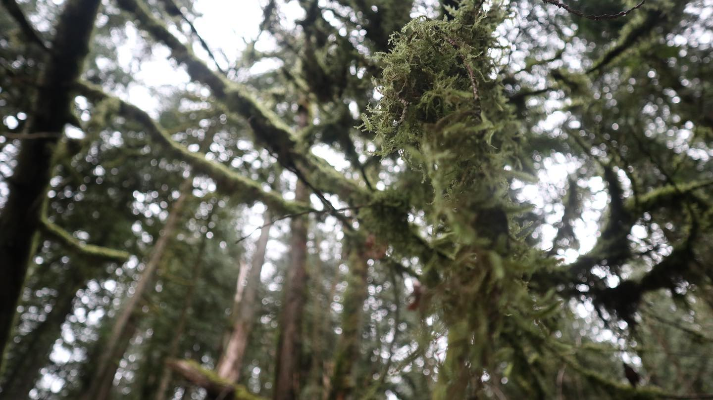
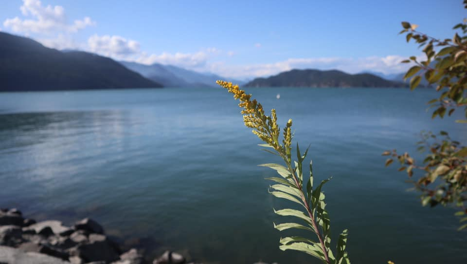
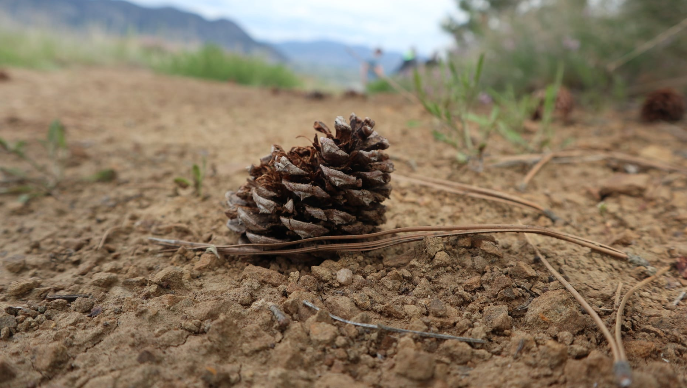
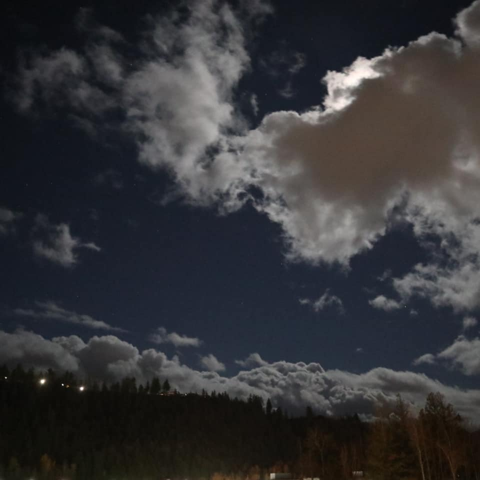

Hello! Welcome to my first website building blog. As I'm learning about technology in the First Nation Technology Council, I have learned that you need to ask questions, listen to the teacher, and do the step-by-step instructions. As a learner I have been learning; Miscoft Word, files, digital communications, Cisco, and many others things. I would the most chanllanging one yet, is coding. I love it and hate it. Anyways, this website is about my photos and the advetures I have gone with friends and family.
My sister and I walking along the water falls
Me/

A pinecone when I was with my best friend in Fort St. John
A single flower around Harrison Hot Spring
Caves around Merritt, BC. A family day to visit me sister in Merritt
